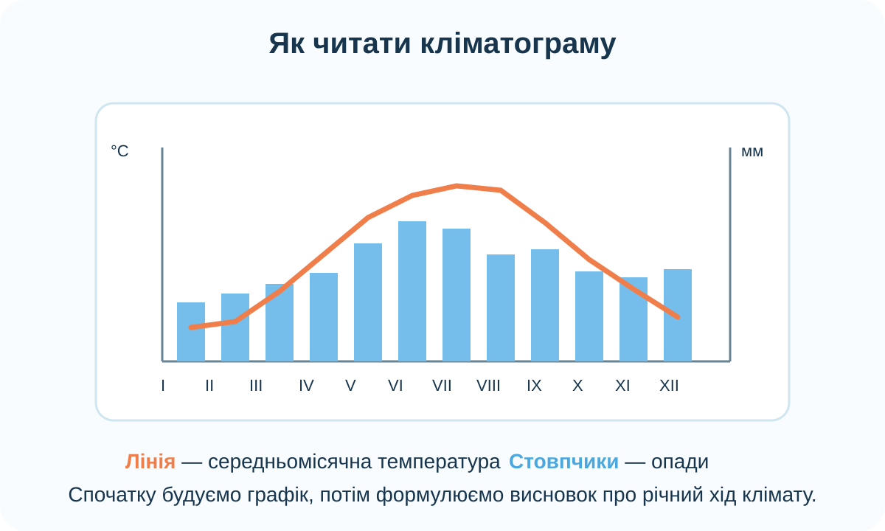

7-Б · ГЕОГРАФІЯ · УРОК №13 · автор: Скринченко К. А.
Чому на одній планеті так різний клімат?
Лондон і Якутськ лежать приблизно на одній широті. Але їхні зими — це зовсім різні історії. Хтось явно втрутився у клімат. Ми знайдемо всіх «підозрюваних»: Сонце, океан, повітряні маси, рельєф і течії.
☀️ сонячна енергія🌬️ повітряні маси🌊 океан і течії⛰️ гори🗺️ 5+ карт і схем📊 кліматограма
🎯 Завдання під час перегляду: назвіть три основні групи кліматотвірних чинників: сонячна радіація, циркуляція атмосфери та підстильна поверхня. Поясніть, де тут океанічні течії та рельєф.
17:00 · перевірка картосхем справжніми даними
🛰️ Карта NASA: виміряна температура поверхні океану
Карта NASA тимчасово не завантажилася.
Поверніться до вбудованих картосхем угорі або відкрийте першоджерело NASA. Не робіть вигляд, що розглядали зображення, яке не відкрилося.
Це вже карта даних, а не наша узагальнена схема. Якщо зображення не завантажилося, скористайтеся посиланням на сторінку NASA нижче.
NASA/GSFC Scientific Visualization Studio. Довготривала середня температура поверхні океану; найвиразніша глобальна закономірність — зниження температури від екватора до полюсів.
Спостереження 1
Порівняйте води біля екватора, 40–50° широти та полярних районів.
Спостереження 2
Знайдіть відхилення від простої широтної смугастості біля східного узбережжя Північної Америки.
Висновок
Чому карта доводить роль широти, але водночас показує роль течій?
🗺️ Атлас клімату: не вигадані смужки, а тематичні карти світу
Тут 6 реальних картографічних матеріалів із джерелами, періодами спостережень і легендами. Кожна карта показує свою змінну. Не плутайте сонячне опромінення з температурою, опади — з тиском, а карту переважаючих вітрів — із прогнозом на завтра.
Розраховане за супутниковими та атмосферними даними сумарне сонячне опромінення горизонтальної поверхні (GHI), багаторічний період до 2018 року. Це НЕ карта температури повітря.
🧭 Дослідницьке запитання: Порівняйте північ Африки з екваторіальними лісами та Північною Європою. Чому максимум GHI не обов'язково точно збігається з екватором?
Середній тиск, приведений до рівня моря, у січні за 1970–2020. Високий і низький тиск допомагають розуміти перенесення повітря, але карта одного місяця не є картою цілого року.
🧭 Дослідницьке запитання: Де на цій карті розташовані області високого й низького тиску? Як вони пов'язані з вітрами та умовами зволоження?
Картографічне узагальнення панівних приповерхневих вітрів, зокрема пасатів і західного перенесення. Стрілки показують переважні напрями, а не погоду сьогодні.
🧭 Дослідницьке запитання: Знайдіть пасати та західні вітри помірних широт. Які потоки можуть переносити атлантичне повітря в Європу?
Картосхема реальних великих океанічних течій на географічній основі: теплі та холодні потоки із назвами. Розгляньте Канарську, Бенгельську, Гольфстрім і течію Гумбольдта.
🧭 Дослідницьке запитання: Знайдіть Гольфстрім і Канарську та Бенгельську течії. Де вони теплі, а де холодні? Як це може змінювати клімат узбереж?
Сучасна кліматична класифікація світу за 1991–2020: вона об'єднує багаторічні температури й опади, а не лише один чинник. Легенда подана на самому зображенні.
🧭 Дослідницьке запитання: Порівняйте Британські острови, Східну Канаду та Центральну Азію. Де межі кліматичних зон порушують просту широтну симетрію?
Як читати професійну карту: ① назва показника; ② одиниці та легенда; ③ період спостереження; ④ закономірність і винятки; ⑤ ймовірна причина. Якщо картинка не відкрилася, натисніть посилання на джерело, а не вигадуйте дані.
🔎 Доказ А. Холодні течії
Зіставте карти течій і опадів. Чи можна пояснити сухість узбережжя Наміб тільки широтою? Назвіть принаймні ще два чинники.
🔎 Доказ Б. Лондон проти континенту
Порівняйте карти переважаючих вітрів, течій і кліматичних типів. Чому західна Європа відрізняється від внутрішніх районів материків на близьких широтах?
Клімат — це реальна географія
📷 Три справжні ландшафти — три географічні історії
Більше ніяких намальованих пісків, хмар і гір. Ці фотографії походять із реальних місцевостей. Спробуйте пояснити побачене двома картами з атласу вище.
Мінікейс: чи може фото саме по собі довести багаторічну кількість опадів? Ні. Для висновку потрібна кліматична карта та дані, а фотографія допомагає побачити наслідки.
Урок без зубріння
🧠 Три «двигуни» клімату та їхні складники
☀️ Сонячна радіація
Визначається широтою, висотою Сонця над горизонтом та тривалістю дня; задає розподіл надходження енергії. Але цього недостатньо, щоб передбачити зиму в Лондоні.
🌬️ Атмосферна циркуляція
Переважаючі вітри, циклони, антициклони та повітряні маси переносять тепло і вологу. Ті самі широти можуть отримувати різне повітря.
🌎 Підстильна поверхня
Суходіл або вода, віддаленість від океану, течії, висота, гори, рослинність і сніговий покрив змінюють нагрівання та зволоження місцевості.
Погода ≠ клімат
Погода — що відбувається в атмосфері зараз або в конкретний період. Клімат — типовий багаторічний режим. Один холодний день не перетворює узбережжя на тундру.
Як працює наука?
Карта показує розташування, кліматограма — сезонні зміни температури й опадів, причинне пояснення пов’язує їх із кліматотвірними чинниками.
17:00–24:00 · кліматична лабораторія
🧪 Змініть умови. Передбачте наслідки.
У вас дві навчальні моделі та кілька ситуацій. Важливо: моделі показують закономірність, але не прогнозують реальну температуру конкретного міста.
🏔️ Експедиція піднімається в гори
Орієнтовно +20,0 °C
Навчальна модель: біля підніжжя +20 °C, температура з висотою зменшується приблизно на 0,6 °C на 100 м. Реальний вертикальний градієнт змінюється.
Розрахуйте самостійно: що буде на висоті 2500 м? Перевірте повзунком.
🌊 Від океану до глибини материка
М'якша зима і прохолодніше літо
Якісна схема: віддалення від океану за інших подібних умов часто посилює річну амплітуду температур. На реальний клімат також діють вітри, течії, рельєф.
Рішення: де загалом очікувати більшої річної амплітуди?
🎯 Три кліматичні дилеми
Ситуація А: схил
Вологе повітря перетинає гірський хребет. Де зазвичай більше опадів?
Ситуація Б: течія
Біля узбережжя діє холодна течія. Яка зміна найімовірніша?
Ситуація В: два міста
Міста на 50–52° пн. ш. відрізняються зимовими температурами. Що перевіряти?
24:00–31:00 · робота з достовірними даними
📊 Побудуйте кліматограму Києва і знайдіть її «відбиток»
Стовпчики — місячні суми опадів (мм), помаранчева лінія — середньомісячні температури (°C). Пригадайте, що це різні величини та різні шкали. Нижче — кліматичні норми 1991–2020 для Києва: середньомісячна температура та місячна сума опадів. Джерело — Центральна геофізична обсерваторія імені Бориса Срезневського; значення узгоджуються з міжнародним набором кліматичних норм JMA.
Місяць
I
II
III
IV
V
VI
VII
VIII
IX
X
XI
XII
t, °C
-3.2
-2.3
2.5
10.0
15.8
19.5
21.3
20.4
14.9
8.6
2.6
-1.8
Опади, мм
37
39
40
42
65
74
68
56
58
46
46
47
Графік будується також автоматично. Він містить обидві шкали й підписи.
1. Амплітуда
Обчисліть різницю між температурою найтеплішого і найхолоднішого місяців.
2. Річні опади
Підсумуйте місячні значення.
3. Режим опадів
У яку частину року опадів загалом більше?
Крок 4. Дайте «біографію» клімату Києва за діаграмою
Назвіть найтепліший і найхолодніший місяці, приблизний річний діапазон, сезон максимуму опадів. Поясніть, чому Київ має виразні сезони та як континентальне положення впливає на амплітуду.
Як читати кліматограму, щоб не переплутати градуси з міліметрами

Перевірте підпис: яке місце й який період?
Знайдіть шкалу °C та помаранчеву температурну лінію.
Знайдіть шкалу мм та сині стовпчики опадів.
Визначте найтепліший і найхолодніший місяці; відніміть температури.
Складіть 12 місячних сум опадів.
Порівняйте сезони, а не тільки окремі місяці.
Тепер поясніть закономірності кліматотвірними чинниками.
Синій стовпчик заввишки 74 мм у червні — не означає, що температура становила 74 °C. Дві шкали. Два різні явища.
Допоміжні джерела
📚 Перевірити себе за першоджерелом
Порівняйте власні висновки з картою температур океану NASA та двома україномовними поясненнями на початку сторінки. Додатково за потреби відкрийте Всеукраїнську школу онлайн. До чужих даних ставтеся як дослідники: спитайте про джерело, період та одиниці вимірювання.
31:00–35:00 · польові кліматичні справи
🌍 Фінальні кейси: не вгадуйте клімат — доведіть його
КЕЙС А · одна широта
Лондон ↔ Калгарі
Лондон і Калгарі лежать на близьких широтах. У Лондоні морське повітря часто пом'якшує температурний режим, у Калгарі переважає континентальніший вплив.
Які два чинники потрібно перевірити насамперед?
Де очікувати більшу річну амплітуду за інших рівних умов?
Яку карту або які дані Ви використаєте для перевірки?
Підказка дослідника (після власної спроби)
Перевірте віддаленість від океану, напрями перенесення повітря й гірський бар'єр. Не робіть висновок тільки з широти.
КЕЙС Б · холодна течія
Чому поруч з океаном буває пустеля?
Уявіть західне узбережжя Південної Америки або Південної Африки з холодною течією. Вода поряд — але опадів може бути мало.
Назвіть течію або територію за картосхемою.
Що змінює холодна течія над водою?
Який ще кліматотвірний чинник потрібен, щоб пояснити сухість?
Підказка (після спроби)
Думайте про стабільне прохолодніше повітря, зменшення випаровування з холоднішої води, температурні інверсії та низхідні рухи повітря. Але річні опади визначає не одна течія.
⚖️ CER — аргумент із доказами
Теза для перевірки: «Географічна широта важлива, але не єдина причина кліматичних відмінностей». Доведіть її не красивими словами, а двома різними картографічними/кліматичними доказами.
Як зрозуміти, що Ви справді навчилися? Можете показати на карті причинний чинник, назвати спостереження, обчислити амплітуду та пояснити відмінності, навіть якщо місто незнайоме.
🏡 Домашнє завдання
§ 13. Поясніть трьома причинно-наслідковими ланцюжками: чинник → що змінюється → географічний приклад. Додатково завершіть аналіз кліматограми Києва і пройдіть підсумковий контроль на сторінці.
Один із ланцюжків має стосуватися океану або течій; ще один — рельєфу чи висоти.
✅ Контроль 10/10: зрозуміли причини чи просто впізнали слова?
Десять завдань на читання карт, кліматограми й причинні зв'язки. Після здавання побачите результат і пояснення. Надайте власні дані, щоб підписати картку для вчителя.
.jpg?width=700)


_V2.1.jpg?width=1200)